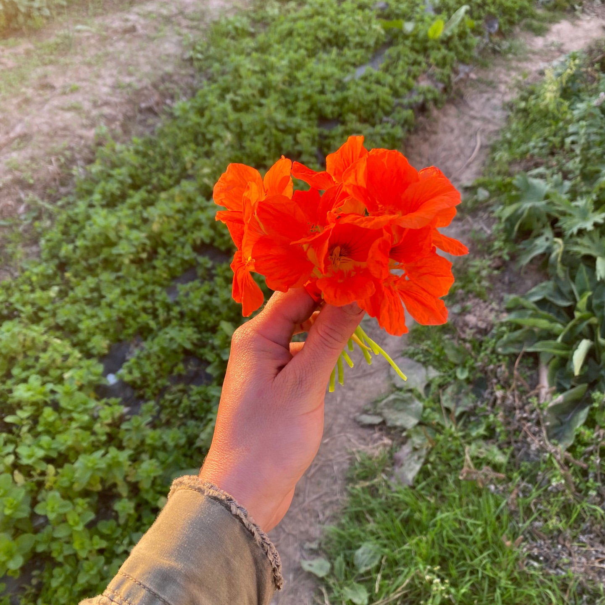
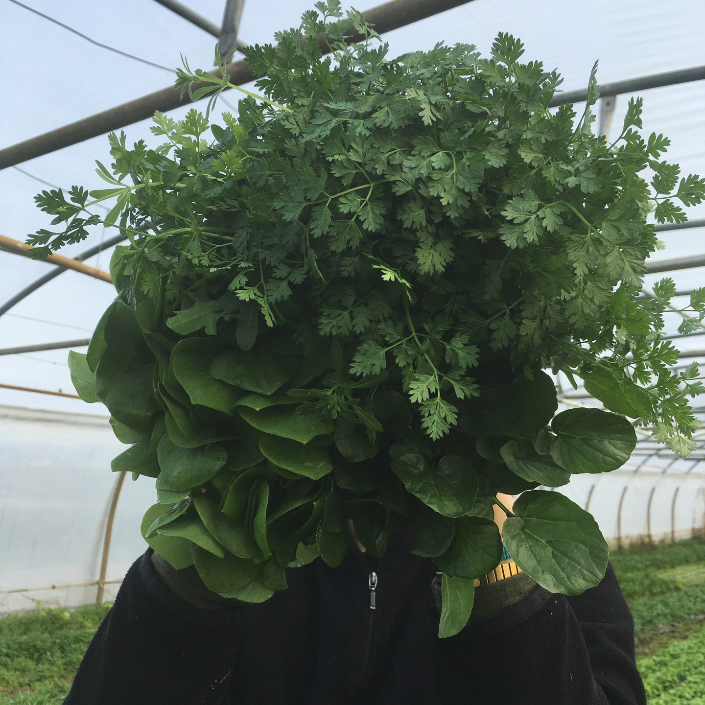
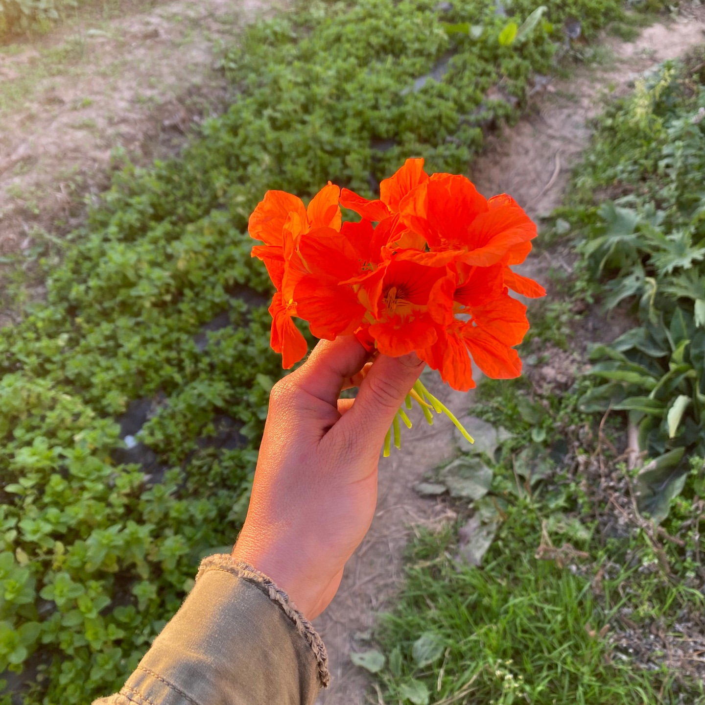
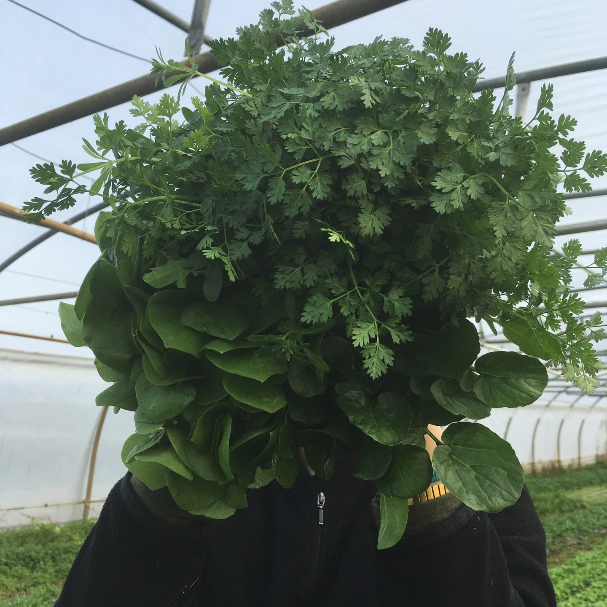
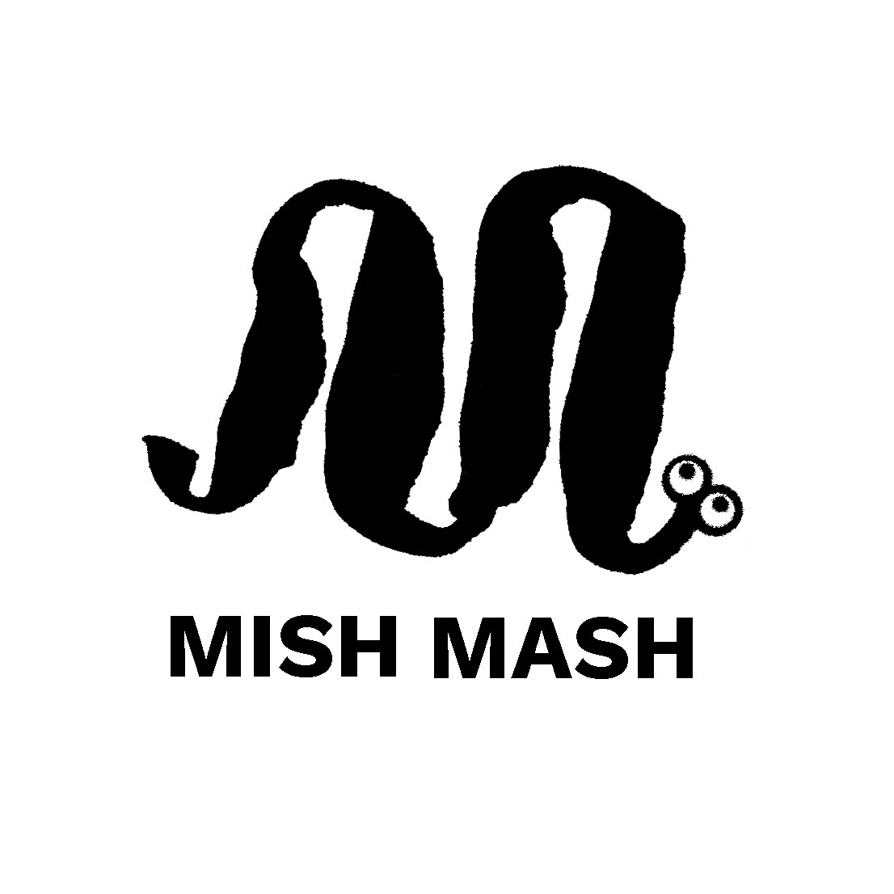
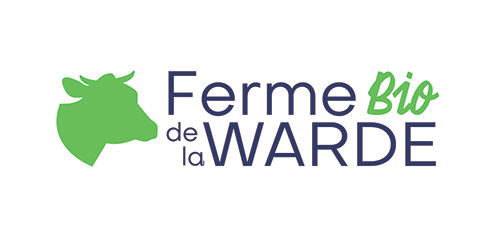
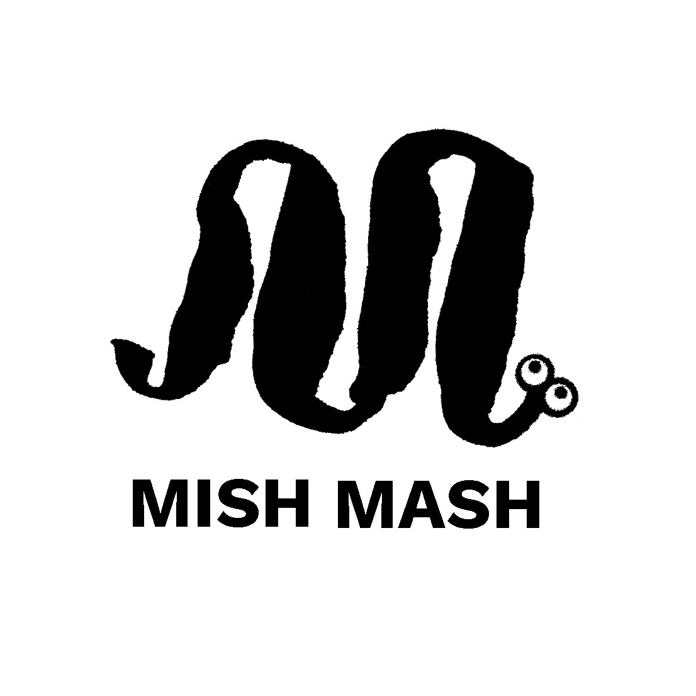
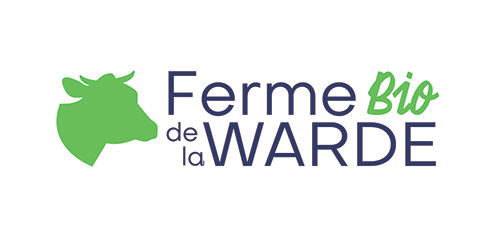

The first efficiency of any social system is the health of its people.
— Joel Salatin
We partner with farmers right here in your community. Every product comes from within 50 miles, which means fresher food on your table and a smaller carbon footprint. When you shop local, you're not just buying groceries—you're supporting your neighbors, strengthening your local economy, and getting produce that was harvested just days ago. You'll taste the difference that short farm-to-table distance makes.
Our selection features seasonal fruits, vegetables, dairy, eggs, and pantry staples—all certified organic and free from pesticides, synthetic fertilizers, and GMOs. We believe you deserve to know exactly what you're eating and where it comes from. Every item in our shop meets strict organic standards, so you can feed your family with confidence. Real food, grown the way nature intended.
Behind every product is a dedicated farmer who cares deeply about the land and what they grow. We work exclusively with small-scale organic farms that prioritize soil health, biodiversity, and sustainable practices. These aren't factory farms—they're family operations where farmers know their fields, their animals, and their craft. When you buy from us, you're directly supporting these hardworking growers who are committed to doing things right.
Mish Mash is a small agroecological family farm in Sint-Pieters-Leeuw. We are located a stone's throw from Neerpede, southwest of Brussels. There, we produce several varieties of organic vegetables (leafy, fruit, and root) and aromatic herbs on one hectare, including seven ares (700 square meters) of greenhouses.
 



Harvested from the field at Mish Mash. Real vegetables, real flavor.
In the heart of the Namur region, Domaine la Falize counts more than 200 hectares of forests and arable land. For the past 20 years we have cultivated our land organically. Our philosophy aims to cultivate farm produce of excellence and to distribute them locally with the utmost respect of our environment.
Sun-ripened perfection from La Falize. Picked at peak sweetness.
Discover the journey of Ferme de La Warde as they transition to sustainable, organic farming practices. This video showcases how traditional agriculture is evolving to meet modern environmental challenges while preserving the land for future generations. See firsthand the methods, passion, and dedication behind farms that are choosing a more sustainable path—proof that agriculture can work in harmony with nature.
Video by Fonds Baillet Latour Fund
 



Every purchase you make is a vote for healthier soil, cleaner water, and a more sustainable future. By choosing organic, you're supporting farmers who care about the land and communities that thrive on local food systems. Start your journey to better eating today—browse our selection, discover new favorites, and taste the difference that organic makes. Your health and the planet will thank you.